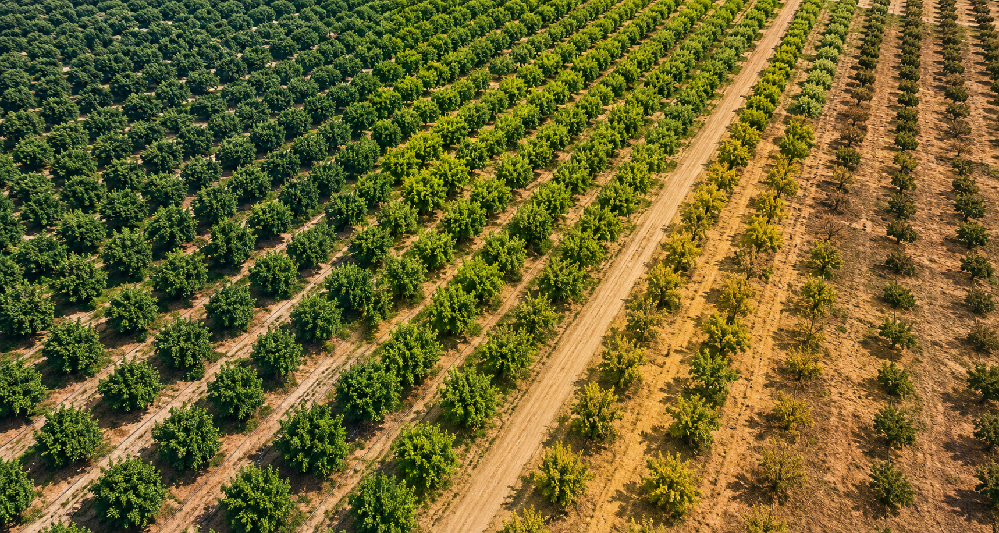
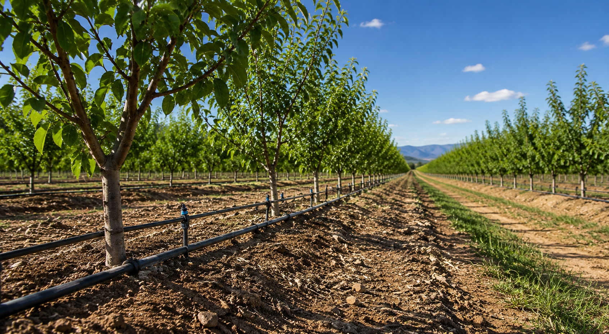
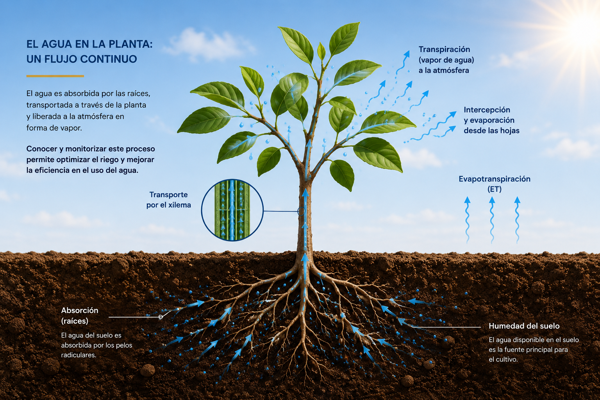
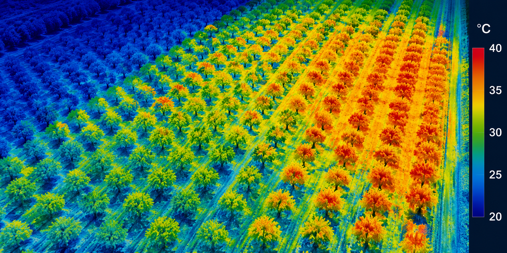
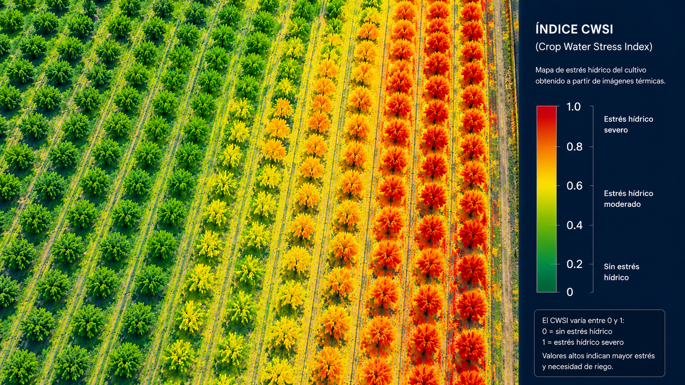

Estado hídrico
Evaluación del contenido de agua disponible para el cultivo y detección temprana del déficit hídrico.

LÍNEA DE INVESTIGACIÓN
Optimización del riego mediante teledetección, sensores térmicos e inteligencia artificial para una agricultura más eficiente y sostenible.
INTRODUCCIÓN
El agua constituye uno de los recursos más limitantes para la agricultura mediterránea. Su gestión eficiente requiere conocer con precisión el estado hídrico de los cultivos para adaptar las estrategias de riego a las necesidades reales de cada parcela.
La integración de imágenes térmicas, sensores remotos, plataformas UAV e inteligencia artificial permite detectar de forma temprana el estrés hídrico, optimizar la programación del riego y mejorar la sostenibilidad del uso del agua.

EL AGUA COMO RECURSO ESTRATÉGICO
Comprender la dinámica del agua en el sistema suelo-planta-atmósfera es esencial para diseñar estrategias de riego basadas en datos objetivos.
El análisis continuo del estado hídrico del cultivo permite reducir el consumo de agua, minimizar el estrés fisiológico y aumentar la resiliencia frente a condiciones climáticas cada vez más variables.

¿QUÉ SE MONITORIZA?
Evaluación del contenido de agua disponible para el cultivo y detección temprana del déficit hídrico.
La temperatura de la cubierta vegetal es uno de los mejores indicadores del estrés hídrico.
Cuantificación de los flujos de agua desde la planta hacia la atmósfera.
Obtención de variables biofísicas mediante sensores multiespectrales e hiperespectrales.
Estimación de la pérdida total de agua del sistema suelo-planta-atmósfera.
Monitorización de la disponibilidad hídrica mediante sensores de campo y teledetección.
IMÁGENES CIENTÍFICAS

Distribución espacial de la temperatura foliar para detectar diferencias fisiológicas entre plantas.

El Crop Water Stress Index permite cuantificar el nivel de estrés hídrico y optimizar la programación del riego.
APLICACIONES
Diseño de estrategias de riego basadas en indicadores objetivos del estado hídrico del cultivo.
Identificación temprana del déficit hídrico antes de que aparezcan síntomas visibles.
Reducción del consumo de agua manteniendo la producción y la calidad de los cultivos.
Integración de información procedente de sensores, imágenes y modelos para una gestión eficiente.